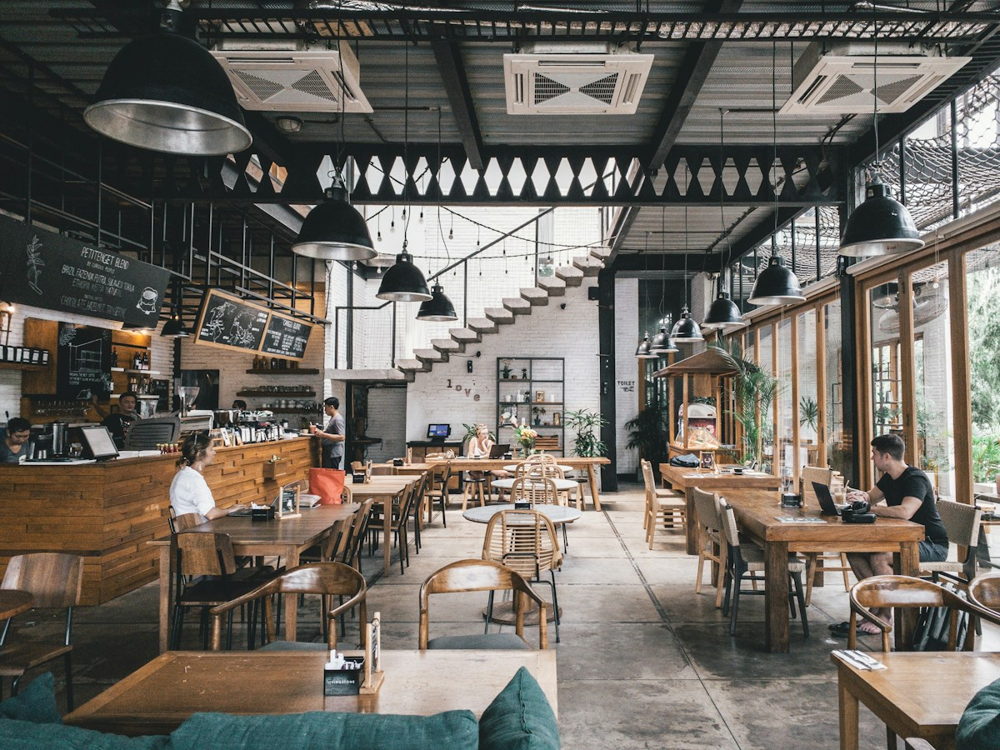

In 2018, chefs Marcus Vance and Elena Rossi set out with a simple rebellious question: Why does casual dining have to settle for industrialized, frozen compromise?
Equipped with a vintage refurbished truck and a screaming-hot 450-degree plancha, they began serving smashed grass-fed Wagyu burgers and 48-hour fermented sourdough sandwiches to late-night music lovers and chefs ending their shifts.
Word spread like wildfire. Lines wrapped around four city blocks. Today, BUNORA has grown into an iconic urban dining destination, yet our core conviction remains untouched: every ingredient matters, every sear must be flawless, and no guest leaves hungry.

Never frozen. Never microwaved. Sourced locally with absolute transparency.
To democratize fine-dining culinary techniques through bold, accessible, crave-inducing burgers and sandwiches. We celebrate real local agriculture, empower passionate kitchen artisans, and foster joyful community gatherings around the dinner table.
To become the global benchmark for conscious, modern hospitality. We envision a world where urban comfort food is celebrated as a high craft, supporting circular zero-waste kitchen ecosystems and inspiring wholesome eating.
We believe extraordinary food is the inevitable result of extraordinary ingredients, meticulous timing, and deep culinary respect.
Our beef is sourced from family-run pastures. Humane pasture-raised cattle, hormone-free, with incredible natural marbling.
Our master sourdough mother dough has been maintained since 2017. 48-hour cold fermentation yields unmatched crust and airy crumb.
We never use processed cheese slices. Only 24-month aged Wisconsin cheddar, cave-aged Swiss Gruyère, and Italian bufala.
Our 12 house sauces, pickles, hot chutneys, and glazes are prepared daily in small batches by our sous chefs.
Meet the visionary chefs and bakers who bring heart, precision, and tireless creativity to BUNORA every day.

BUNORA's dining room pairs industrial steel, reclaimed barn oak, and warm mid-century ambient lighting with comfortable leather booths and community sharing tables.
Watch our open grill line in action from the counter stools, grab a craft beer on draft, or enjoy our lush, heated outdoor patio on breezy summer nights.